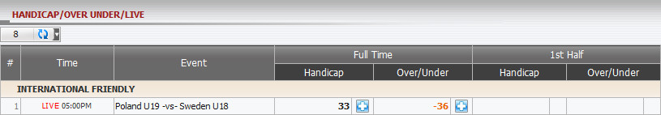
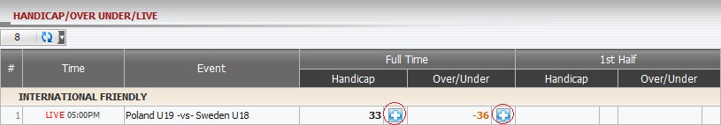
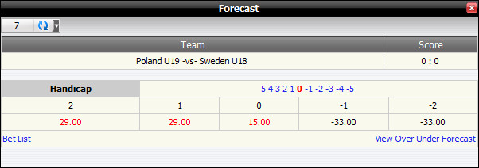
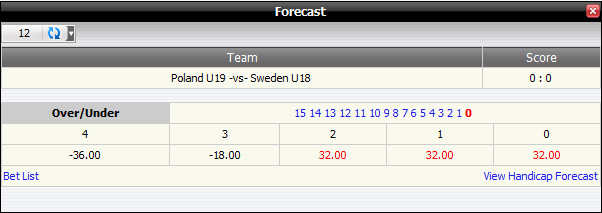

Handicap/Over Under/Live
Definition:
Show master’s win/loss based on position taking for tickets which have bet type Handicap/Over Under/Live for 1st Half or Full Time (figure 1.1).

figure 1.1
With INTERNATIONAL FRIENDLY League, members bet on match Poland U19 -vs- Sweden U18 and details as below:
-
1st bet: stake = 110, odds = 0.88, bet type: Handicap, Full Time, Master position taking(PT) = 30%.
--> Master's earning based on PT = -(stake* PT)*1 = -110*30%*1 = 33
-
2nd bet: stake=120, odds = 0.88, bet type: Over/Under, Full Time, Master PT = 30%.
--> Master 's earning based on PT = -(stake* PT)*1 = -120*30%*1 = -36
Note:
- Master's earning based on PT for Handicap = (Total Home stake – Total Away stake) * Master PT.
- Master's earning based on PT for Over/Under = (Total Over stake – Total Under stake) * Master PT.
- Sign "-" means total turnover for Away/Under greater than total turnover for Home/Over.
- If absolute value of Odds < 1 then Master earning amount= stake * Master PT * 1.
- If absolute value of Odds >= 1 then Master earning amount= stake * Master PT * |odds|.
Forecast function
This function helps master figure out win/loss amount based on Home score, Away score. To view the winlost forecast, click “+” sign.

figure 1.2
-
Full Time Handicap: In this example, member1 placed a bet 110 on Poland U19 0.25, odds= 0.88, bettype=FT.HDP, master position taking = 30%.

figure 1.3
This is Handicap Forecast and details as below:
- -2: -33 --> If (Home score - Away score) = -2 then Master will win: -110*30%*1 = -33
- -1: -33 --> If (Home score - Away score) = -1 then Master will win: -110*30*1 = -33
- 0: 15 --> If (Home score - Away score) = 0 then Master will lose 1/2: 110*30%*0.88*1/2 = 15
- 1: 29 --> If (Home score - Away score) = 1 then Master will lose: 110*30%*0.88 = 29
- 2: 29 --> If (Home score - Away score) = 2 then Master will lose: 110*30%*0.88 = 29
-
Full Time Over/Under: In this example, member1 placed a bet 120 on Under 2.75, odds= 0.88, bettype=FullTime Over/Under, master position taking = 30%.

figure 1.4
This is Over/Under Forecast and details as below:
- 0: 32 --> If (Home score + Away score) = 0 then Master will lose: 120*30%*0.88 = 32
- 1: 32 --> If (Home score + Away score) = 1 then Master will lose: 120*30%*0.88 = 32
- 2: 32 --> If (Home score + Away score) = 2 then Master will lose: 120*30%*0.88 = 32
- 3: -18 --> If (Home score + Away score) = 3 then Master will win 1/2: -120*30%*1/2 = -18
- 4: -36 --> If (Home score + Away score) = 4 then Master will win: -120*30%*1 = -36
Note:
- If Odds < 0
- If player wins then odds = 1.
- If player loses then odds = |current odds|.
- If Odds > 0
- If player wins then odds = current odds.
- If player loses then odds = 1.